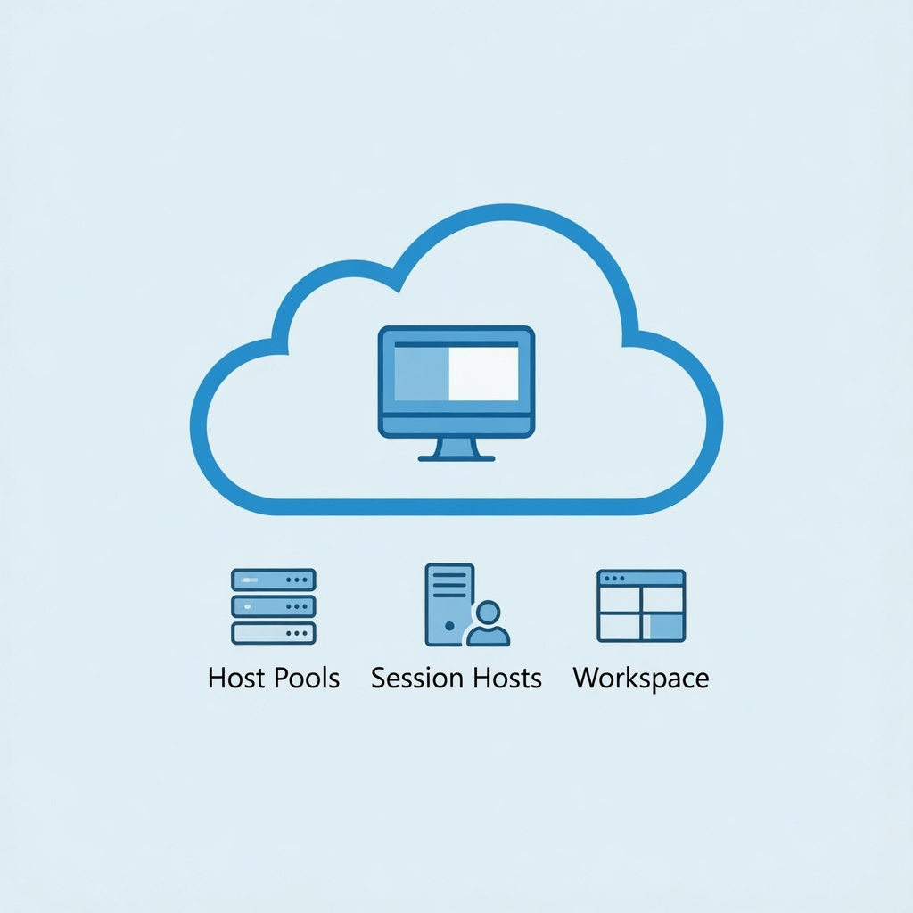

RDP Shortpath, Multipath, Private Link, and Network Design for Azure Virtual Desktop
Most “AVD is slow” tickets are network tickets. This guide covers what AZ-140 expects you to design and fix: latency targets, the session host subnet, UDP transports, QoS, Private Link, and a troubleshooting order that finds the problem fast.

How an AVD connection actually travels
Every connection starts the same way. The client talks to the AVD gateway over TCP 443, and the session host has already opened an outbound connection to the same service. This is reverse connect. No inbound ports open on the session host, and no public IP is needed. After that first TCP connection, the client and host try to upgrade to a UDP transport called RDP Shortpath. If UDP works, graphics, input, and redirection move to it. If not, the session stays on TCP.
Step 1: Assess capacity and speed
Before you pick a region or a VM size, measure the user side.
- Latency target: Microsoft recommends round-trip time under 150 ms from the client network to the Azure region hosting the pool. 150 to 200 ms is acceptable for text work. Above 200 ms, users notice. Use the Azure network round-trip latency statistics to pick the closest region and recheck every few months.
- Bandwidth: RDP adapts to available bandwidth, so there's no fixed number per user. Video, multiple monitors, and high resolutions push it up. Size the office uplink for peak concurrent users and their workload, not for the average.
- Measure real sessions: send host pool diagnostics to Log Analytics. The
WVDConnectionNetworkDatatable records estimated RTT and available bandwidth every two minutes per connection.
// Top 10 users by average RTT, with p95
WVDConnectionNetworkData
| join kind=leftouter (WVDConnections | distinct CorrelationId, UserName) on CorrelationId
| summarize AvgRTT=avg(EstRoundTripTimeInMs), RTT_P95=percentile(EstRoundTripTimeInMs,95) by UserName
| top 10 by AvgRTT descStep 2: Design the session host network
- VNet in the same region as the hosts. Create it before the host pool so it appears in the deployment wizard.
- Size the subnet for growth. One IP per session host, plus room for scaling and image rebuilds. A /24 holds about 250 hosts after Azure's five reserved addresses. Keep private endpoints in their own subnet.
- Hub-spoke. Put session hosts in a spoke and peer it to a hub with Azure Firewall, VPN or ExpressRoute gateway, and DNS. AD DS joined hosts need DNS that resolves the domain and line of sight to domain controllers.
- Outbound access. Hosts must reach the required URL list over TCP 443. In Azure Firewall, use the
WindowsVirtualDesktopFQDN tag and service tags (WindowsVirtualDesktop,AzureMonitor,AzureFrontDoor.Frontend). Don't route AVD traffic through a TLS-inspecting proxy. - NAT gateway. Gives hosts a predictable outbound IP and plenty of SNAT ports. RDP Multipath can open up to five transport paths per session, so SNAT exhaustion is a real risk on large pools behind a single public IP.
- NSG. No inbound rule from the internet is needed. Allow outbound TCP 443, outbound UDP for Shortpath, and inbound UDP 3390 only from your corporate ranges if you use Shortpath for managed networks.
- Admin access. Use Azure Bastion, not public IPs with RDP open.
Step 3: RDP Shortpath (four options)
| Option | Network | What you configure |
|---|---|---|
| Managed networks | VPN or ExpressRoute private peering | Enable the UDP listener on hosts (port 3390), allow it inbound |
| Managed networks with ICE/STUN | VPN or ExpressRoute | Nothing by default. Optional port range limit |
| Public networks with ICE/STUN | Internet, direct UDP through NAT | Nothing by default. Outbound UDP to STUN servers |
| Public networks via TURN | Internet, relayed UDP | Outbound UDP 3478 to 51.5.0.0/16 |
All four are enabled by default at the host pool level. You can control each one in the host pool's networking settings (ManagedPrivateUdp, DirectUdp, PublicUdp, RelayUdp). Only the managed listener needs host configuration:
# Enable the RDP Shortpath for managed networks listener (or use Intune / GPO)
$ts = "HKLM:\SOFTWARE\Policies\Microsoft\Windows NT\Terminal Services"
New-Item -Path $ts -Force | Out-Null
Set-ItemProperty -Path $ts -Name fUseUdpPortRedirector -Type DWord -Value 1
Set-ItemProperty -Path $ts -Name UdpRedirectorPort -Type DWord -Value 3390
New-NetFirewallRule -DisplayName "RDP Shortpath (UDP 3390)" -Direction Inbound `
-Protocol UDP -LocalPort 3390 -Action Allow -Profile Domain,Private
# Host pool view of Shortpath settings
Get-AzWvdHostPool -Name hp01 -ResourceGroupName rg-avd-lab | FL ManagedPrivateUdp, DirectUdp, PublicUdp, RelayUdpWhen both managed and public paths are available, the client uses whichever connects first. Microsoft says to keep TURN enabled unless you're troubleshooting, because it's the fallback when direct UDP fails behind symmetric NAT.
Step 4: RDP Multipath
RDP Multipath went GA in July 2025 and finished rolling out in November 2025. It keeps several transport paths alive at once and switches when the active one degrades. Paths can include several UDP routes (STUN and TURN) plus redundant TCP reverse connect paths. Redundant TCP began its GA rollout in May 2026.
- No configuration switch. It works automatically when RDP Shortpath is available and the client supports it.
- Client support: Windows App for Windows 2.0.559.0+ for multiple UDP paths, 2.0.1069.0+ for redundant TCP. macOS has beta support. Other platforms aren't supported yet.
- Plan for ports: up to three UDP and two TCP outbound paths per session. Check firewall state tables and NAT capacity.
- Verify: the connection bar in the client shows Multipath, and AVD Insights shows it in connection reliability.
Step 5: QoS for RDP Shortpath
QoS lets routers move RDP ahead of bulk traffic like downloads. It reduces jitter, packet loss, and delay on congested links. Two rules decide whether it works:
- QoS needs RDP Shortpath for managed networks. It isn't supported over the reverse connect transport.
- Every hop has to honor it. Mark packets on the session host, then configure switches, routers, and WAN links to queue on that marking. A VPN from home only gets priority inside your managed network.
Microsoft recommends DSCP 46 (Expedited Forwarding). On Entra joined hosts, use PowerShell or Intune. On domain-joined hosts, use the Policy-based QoS node in Group Policy.
New-NetQosPolicy -Name "RDP Shortpath for managed networks" `
-AppPathNameMatchCondition "svchost.exe" -IPProtocolMatchCondition UDP `
-IPSrcPortStartMatchCondition 3390 -IPSrcPortEndMatchCondition 3390 `
-DSCPAction 46 -NetworkProfile All
# Optional: cap per-session bandwidth on metered links (same Shortpath requirement)
# -ThrottleRateActionBitsPerSecond 10mbStep 6: Azure Private Link
Private Link puts AVD service traffic on private IPs in your VNet so clients and hosts don't use public routes for the TCP side. Three sub-resources map to three workflows:
| Workflow | Resource | Sub-resource | How many | Private DNS zone |
|---|---|---|---|---|
| Initial feed discovery | Workspace | global | One for your entire deployment | privatelink-global.wvd.microsoft.com |
| Feed download | Workspace | feed | One per workspace | privatelink.wvd.microsoft.com |
| Connections to host pools | Host pool | connection | One per host pool | privatelink.wvd.microsoft.com |
The setup order:
- Enable the feature on each subscription by re-registering the
Microsoft.DesktopVirtualizationresource provider. - Create the endpoints above in a dedicated subnet, integrated with the private DNS zones. Link the zones to every VNet that resolves AVD, or forward to them from on-premises DNS.
- Use a placeholder workspace for
global. It has no app groups, and you never delete it. Deleting it breaks feed discovery for every workspace. - Set public network access on host pools (Enabled, Disabled, or enabled for only clients or only session hosts) and workspaces.
- Restart
RDAgentBootLoaderon each session host, or reboot them, after changing a host pool's private endpoint or network settings.
Register-AzResourceProvider -ProviderNamespace Microsoft.DesktopVirtualization
$wsId = (Get-AzWvdWorkspace -Name ws01 -ResourceGroupName rg-avd-lab).Id
$conn = New-AzPrivateLinkServiceConnection -Name pls-ws01-feed -PrivateLinkServiceId $wsId -GroupId 'feed'
$subnet = Get-AzVirtualNetwork -Name vnet-avd -ResourceGroupName rg-avd-lab | Get-AzVirtualNetworkSubnetConfig -Name snet-endpoints
New-AzPrivateEndpoint -Name pe-ws01-feed -ResourceGroupName rg-avd-lab -Location eastus `
-Subnet $subnet -PrivateLinkServiceConnection $conn
# Repeat with GroupId 'connection' on the host pool, and 'global' once on the placeholder workspaceglobal endpoint exists across all deployments. The global workspace is always reachable publicly, even if you set it to private. If you restrict ports to the host pool's connection endpoint, you must allow the whole TCP range 1 to 65535, because Azure maps gateway traffic across it. Private Link covers the TCP path. RDP Shortpath still runs separately over UDP.
Private Link and Shortpath work together. A common enterprise design is Private Link for TCP over ExpressRoute, with Shortpath for managed networks and QoS on top. If you use Entra Kerberos for FSLogix over a storage private endpoint, add the privatelink FQDN to the storage account's app registration, or users see error 1326.
Step 7: Troubleshoot connectivity in order
- Host health: host shows Unavailable or Needs assistance? Run the Azure Virtual Desktop Agent URL Tool (
WVDAgentUrlTool.exe) on the host to find blocked required URLs. - Name resolution: with Private Link, run
Resolve-DnsName rdweb.wvd.microsoft.comfrom client and host. A public IP means the private DNS zone isn't linked or forwarded. - Path: Network Watcher Connection troubleshoot and IP flow verify show whether an NSG or route blocks the host's outbound traffic. Virtual network flow logs show what was allowed or denied.
- Transport: check the client's connection information. TCP only means UDP is blocked. Check outbound UDP 3478 and the 49152-65535 range, or the 3390 listener and firewall for managed networks.
- Quality: query
WVDConnectionNetworkDatafor RTT and bandwidth, and use AVD Insights for gateway region and connection reliability.
| Symptom | Likely cause | Fix |
|---|---|---|
| Hosts Unavailable after firewall change | Required URLs blocked | Allow the WindowsVirtualDesktop FQDN tag and service tags |
| Connection works but always TCP | UDP blocked outbound or listener missing | Open STUN/TURN ranges or enable listener and NSG rule |
| Feed empty on private network | DNS resolves public IPs, or global endpoint missing | Link private DNS zones, create the global endpoint |
| Private Link change, hosts stop connecting | Agent didn't pick up new config | Restart RDAgentBootLoader or reboot |
| Lag for one region's users | RTT above 150 ms | Deploy hosts closer to those users |
| Random drops on large pool | SNAT exhaustion | Add a NAT gateway or more public IPs |
Resources
- Implement and manage networking for Azure Virtual Desktop – Microsoft Learn training module
- RDP Shortpath for Azure Virtual Desktop
- Use RDP Multipath to improve connection reliability
- Implement Quality of Service (QoS) for Azure Virtual Desktop
- Azure Private Link with Azure Virtual Desktop
- Required FQDNs and endpoints for Azure Virtual Desktop
- AZ-140 study guide – skills measured
Checked against Microsoft Learn documentation as of October 2026. RDP Multipath client support is changing quickly, so check the Learn page for current client versions.